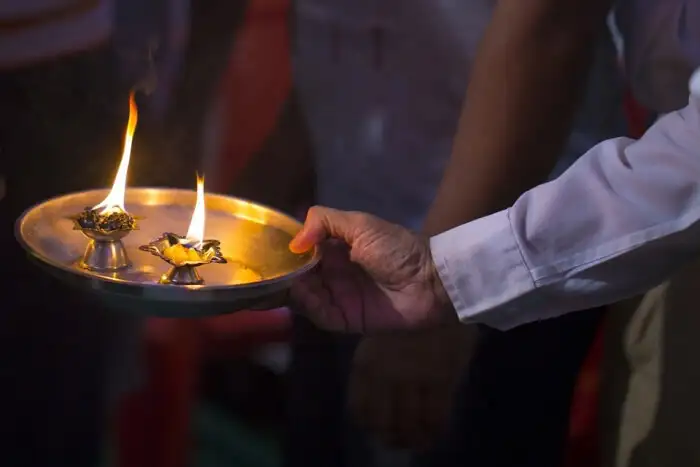
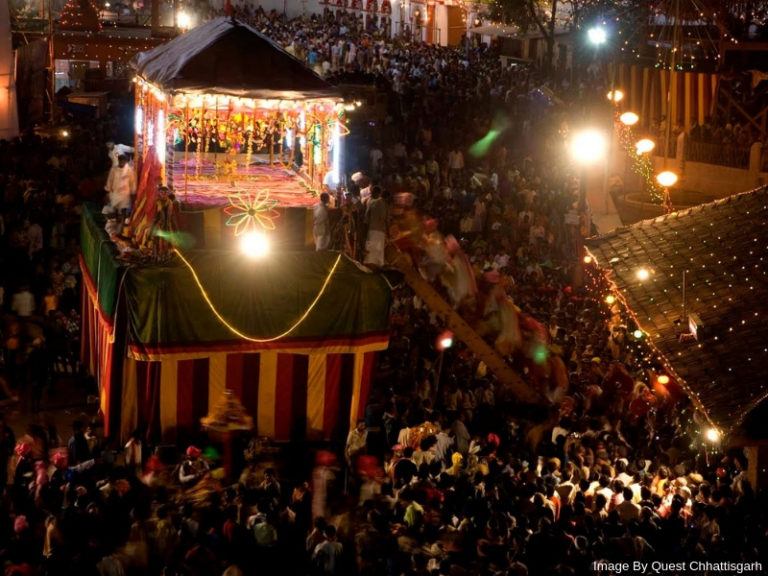

Sri Vithappa Fair is one of the famous fairs and festivals of Karnataka. The festival is organized every year on the 14th or 15th day of the month Aswija. The three day fair has great religious and cultural importance and is visited by a large number of people from across states. During the festival, a puja is held followed by a procession.

More commonly known as ‘Mysuru Dasara’, this is one of the biggest Karnataka festivals which is also locally called the Karnataka Dasara festival. Spanning over 10 days, the festivities are in full bloom during this time of the year. The Mysore Palace is one of the best places to visit during Mysore Dasara. Adorned with 10,000 beautiful light bulbs, it is truly a beautiful sight. Various dance and music programs are organized across the state that you can enjoy.
 Another one of the dance festivals in Karnataka, Pattadakal a gains the attention of many every year. They are conducted in the temples of the town that were established in the 7th century and are now recognized as world heritage sites by UNESCO. For art and dance enthusiasts, this is a festival not to miss!
Another one of the dance festivals in Karnataka, Pattadakal a gains the attention of many every year. They are conducted in the temples of the town that were established in the 7th century and are now recognized as world heritage sites by UNESCO. For art and dance enthusiasts, this is a festival not to miss!